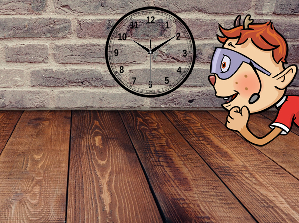

Wolkenpusten
Wenn du deinen Kopf mal nicht anstrengen, sondern deine Geschicklichkeit überprüfen willst, ist Wolkenpusten genau das Richtige für dich. Es geht darum, eine Wattebausch-Kugel schneller als der Gegner mit einem Strohhalm durch einen Parcours zu pusten.
Anzahl der Spieler:
2 Spieler, die gegeneinander antreten oder mehrere Spieler, die in Teams gegeneinander spielen (es muss aber immer eine gerade Anzahl sein)
Material:
-
1 bis 2 Wattebausch-Kugeln
-
1 Strohhalm pro Spieler
-
1 Stoppuhr
-
Parcoursmarkierungen (z.B. Klebeband oder Maßband bzw. Meterstab)
-
Gegenstände als Hindernisse (z.B. eine Klopapierrolle als Tunnel, ein Buch als Brücke oder einen Löffel als Zwischenstopp, auf dem die Wattebausch-Kugel kurz liegen bleiben muss, bevor sie weiterrollt)
Vorbereitungen:
Legt zuerst eine Strecke fest, von wo bis wo euer Parcours gehen soll. Sucht euch dazu am besten eine Strecke mit glattem Untergrund (Parkett, Fliesen) aus, damit die Wattebausch-Kugel auch gut rollen kann. Überlegt euch, welche Gegenstände ihr als Hindernisse nehmen könnt und verteilt sie auf der Parcoursstrecke.
Wenn alles aufgebaut ist, kann’s auch schon losgehen.
Spielablauf:
Der erste Spieler geht am Startpunkt des Parcours auf die Knie, nimmt den Strohhalm in den Mund und legt die Watte-Wolke vor sich. Ein Mitspieler gibt das Loszeichen und startet die Stoppuhr. Der erste Spieler versucht, den Parcours so schnell wie möglich zu durchqueren, indem er die Wattebausch-Kugel mit dem Strohhalm vor sich her pustet, ohne dass sie außerhalb des Spielfelds gerät. Sollte sie doch aus dem Feld rollen, muss wieder beim Start angefangen werden. Sobald der erste Spieler die Wolke über die Ziellinie pustet, wird die Zeit angehalten und notiert.
Nun ist der nächste Spieler an der Reihe, der natürlich versucht, die Zeit des ersten Spielers zu unterbieten und schneller zu sein. Wenn ihr gleichzeitig gegeneinander antreten wollt, geht das natürlich auch. Dann müsst ihr aber den Parcours zweimal aufbauen.
Ende:
Wolkenpusten ist dann zu Ende, wenn jeder Spieler einmal dran war. Der Spieler mit der besten Zeit gewinnt. Spielt ihr in Teams, so werden einfach die Zeiten der einzelnen Teammitglieder zusammengezählt. Das Team, welches die wenigsten Minuten auf den Zettel bringt, ist das Sieger-Team.

Wichtiger Hinweis: Bitte denkt der Umwelt zuliebe daran, dass ihr Plastikstrohhalme nach dem Spiel nicht sofort wegwerft, sondern abwascht, um sie wiederzubenutzen. Alternativ dazu könnt ihr auch Papier- oder Silikonstrohhalme für das Spiel verwenden.
KABU wünscht euch viel Spaß beim Ausprobieren von Wolkenpusten!